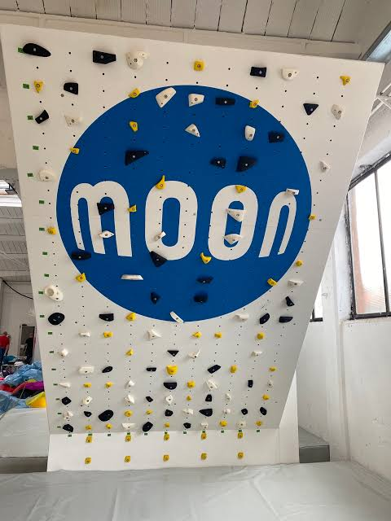

Dettagli sulle Pareti di Arrampicata
Scopri le caratteristiche, il funzionamento e come migliorare su ognuna delle nostre tre pareti principali.
La Parete Spray Wall

La Spray Wall è una struttura inclinata all'indietro caratterizzata da una superficie ricoperta da una grandissima quantità di appigli di ogni forma e colore, disposti in modo molto ravvicinato e apparentemente caotico. A differenza delle pareti standard dove un percorso ha un solo colore, qui non ci sono strade obbligate: si scelgono in autonomia le prese da toccare per creare sequenze personalizzate per salire. Questa parete viene utilizzata per inventare sfide sempre diverse, allenare la resistenza della parte superiore del corpo e abituarsi a trovare soluzioni motorie intelligenti anche su appigli piccoli. Rappresenta la scelta ideale per chi vuole costruire una solida base muscolare, allenare la creatività e imparare a gestire movimenti liberi. Per trarre il massimo beneficio da questa parete si può migliorare imparando a pianificare con calma i passi prima di staccare i piedi da terra, affinando il bilanciamento del peso corporeo per non affaticare le braccia e abituandosi a sfruttare meglio gli appoggi per i piedi per mantenere l'equilibrio durante tutta la salita.
La Parete Kilter Board

La Kilter Board è una parete tecnologica con una griglia ordinata di appigli arrotondati, dotata di un sistema di luci colorate al LED posizionate sotto ogni presa e montata su una struttura a inclinazione regolabile. Funziona tramite una connessione all'applicazione dello smartphone da cui è possibile scegliere migliaia di percorsi condivisi da utenti di tutto il mondo: quando si seleziona una sfida, la parete si illumina indicando esattamente quali punti usare per partire, dove mettere le mani durante il percorso e dove arrivare in cima. Si usa perché rende l'esercizio dinamico, stimolante e personalizzabile, permettendo di iniziare con inclinazioni leggere e percorsi facili per poi aumentare la pendenza e la difficoltà nel tempo. Per migliorare su questa parete è consigliabile lavorare gradualmente sull'inclinazione per abituare le spalle e la schiena a sostenere il peso, aumentare la precisione nell'afferrare le prese con decisione senza esitazioni e mantenere una posizione del corpo ben distesa per muoversi agevolmente verso le luci successive.
La Parete Moon Board

La Moon Board è una parete rigida inclinata con un angolo fisso molto accentuato, riconoscibile dallo sfondo chiaro con un grande cerchio blu al centro e da una serie di appigli essenziali posizionati secondo uno schema identico in tantissime palestre del mondo. Il suo funzionamento sfrutta una combinazione standardizzata unita a luci guida che indicano il percorso prescelto tramite app, consentendo di confrontarsi sui medesimi tracciati con persone a livello globale. È la parete perfetta per chi desidera sviluppare una grande forza nelle mani, incrementare la potenza muscolare ed esercitarsi su pendenze importanti con appigli ridotti. Essendo la struttura più impegnativa, gli aspetti su cui concentrarsi per migliorare comprendono l'impiego efficace della spinta delle gambe per ridurre lo sforzo delle braccia, la stabilità dell'addome per evitare oscillazioni del corpo e l'esecuzione di movimenti fluidi e diretti verso l'appiglio successivo senza sprecare energie.